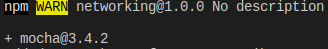

Developing Unit Tests with Mocha
Mocha es un framework multiparadigma para Node.js que cuenta con varios estilos diferentes para describir las pruebas. En este caso se utilizará BBD (behavior-driven-development).
Installing Mocha with npm
Comenzamos instalando la herramienta con :
npm install --save-dev --save-exact mocha@3.4.2 
Comprobamos que se ha añadido Mocha y sus dependencias al proyecto:

Writing Mocha Unit Test
Creamos nuestra primera prueba unitaria, para ello creamos un directorio llamado test para guardar el código relacionado con las pruebas y añadimos un fichero ldj-client-test con el siguiente código:

En primer lugar obtenemos los modulos que van a utilizarse, como assert, que contiene funciones para comparar valores.
Luego se usa el método describe de Mocha para crear un contexto con nombre para las pruebas que involucren a LDJClient, el segundo argumento de describe es una función que contiene el contenido de la prueba.
Dentro de la prueba se declaran dos variables: una para la instancia de LDJClient, client, y otra para el EvenEmitter subyacente, stream. Antes en beforeEach se declaran nuevas instancias a cada uno de estas variables. Finalmente se llama a it para comprobar un comportamiento específico de la clase.
En el cuerpo de la prueba configuramos un controlador de eventos de mensajes en el cliente. El controlador utiliza el método deepEqual para comprobar que la carga que recibimos coincide con nuestras expectativas.
Running Mocha Tests From Npm
Para ejecutar las pruebas de Mocha con nmp, tenemos quemodificar el fichero package.json:

Ahora solo tendremos que ejecutar en la terminal npm test, si queremos realizar una prueba Mocha, podemos añadir la línea process.nextTick(() => stream.emit('data', '"bar"}\n'));. Veamos su ejecución: